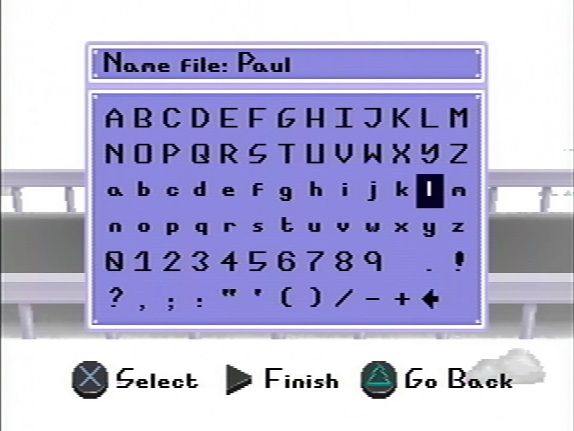
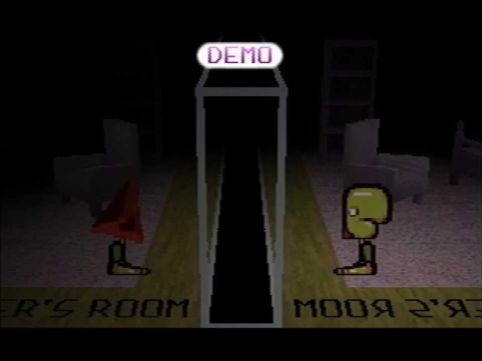
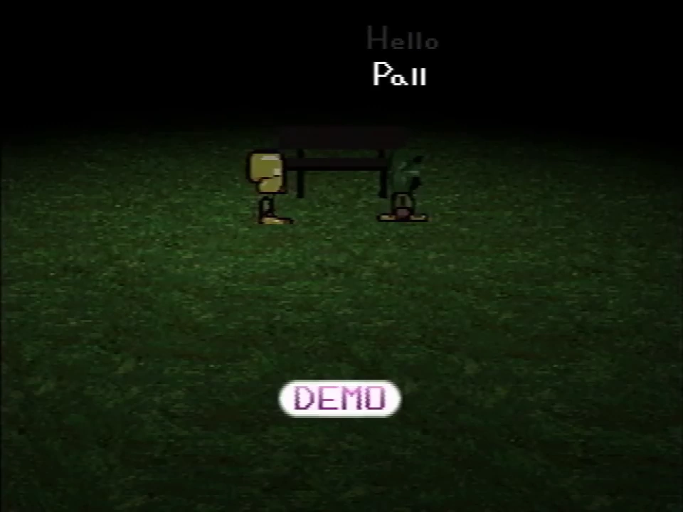

Paul
- This article is about the narrator of the series. For the player character itself, see Guardian.

{kind=link}
Fanmade recreation of Paul's ingame sprite from Petscop 12
Paul is the protagonist of the series. He is the in-universe creator of most (if not all) footage of the Petscop game from his gameplay that is uploaded onto the "Petscop" YouTube channel, and was the initial owner of the channel before giving control of it to a different group.
He appears to be at minimum associated to the family involved in Petscop's story, and possibly Petscop itself. However, he does not seem to be as involved with the family personally, as he mentions having to visit them and sparingly attending family events. He knows Jill, and contacts her after events in Petscop 14.
History
{kind=link}

{kind=link}
Paul naming his save file
Paul never explicitly states his name during his commentary. However, his save file that he creates in Petscop 1 is named "Paul", and some channel descriptions referred to him directly as Paul.
Paul suggests through the description of Petscop 1 and various commentary that he came into possession of Petscop by finding the disc, seemingly in his home. He records the game for Belle (though it was not clarified that the person he was recording the game for and addressing was Belle, until recordings shown in Petscop 22) to prove to her that he isn't lying about finding it. The first four videos seem to be intended for Belle, as Paul addresses things to her personally.
Paul originally created the "Petscop" YouTube channel to show his gameplay to Belle, but later recognized that there were other people watching. He gave control of the YouTube channel to someone else (referred to unofficially as the channel managers) sometime around Petscop 7. It is suggested at this time he did not want to continue playing Petscop; however, they suggested or prompted him to continue. An "arrangement" was made regarding this that he initially had disagreements with, but they are supposedly later resolved, according to the channel managers.
Paul is skeptical about the game and his connections to it. In Petscop 6, he details his thoughts on Petscop's in-game events suggesting it has an entity inside of it, and how he isn't convinced by it. In Petscop 11, he admits he appears to have an indirect connection to the game through whoever he is talking to at the time. In Petscop 14, the game references a conversation he had on his birthday in 2017.
{kind=link}

{kind=link}
Paul's appearance during Petscop 12
During Petscop 12, Paul's inputs from Petscop 10 are played back during a demo recording, but through the perspective of Belle. From Belle's perspective, Paul appears as a guardian with a red triangular head. This is presumably how Paul looks to all other players.
Pall
{kind=link}

{kind=link}
Marvin addressing the player as "Pall" via P2 to TALK, during a demo recording in Petscop 11
During the demo recordings which take place in the school, the player is referred to by other players as "Pall" via P2 to TALK. The other players likely mean to say "Paul" in these cases, as the two words are phonetically identical, however there are several discrepancies between these cases and Paul's regular gameplay, suggesting the possibility that "Pall" is a separate entity from Paul, or that these recordings were created at a different point in time than Paul's current playthrough.
One such discrepancy is the number of pieces that the player possesses at the beginning of the demo recording shown in Petscop 11. The player in the demo begins with 394 pieces, however this is more than Paul has at this point in the series, instead corresponding with the number of pieces that he possesses by the end of Petscop 14.
During Petscop 14 however, Paul briefly hums the melody that was played at the end of the demo from Petscop 11. Which could mean that the recording took place before Petscop 14. Marvin's appearance in Petscop 12, where he repeats the same inputs from the demo in Petscop 11, also suggests that those recordings were created no later than Petscop 12.
Additionally, when the player reaches the school during the second half of Petscop 22, they also begin with 394 pieces, indicating that this occurs on a separate save file than the demo shown during Petscop 11.
Theories
On a few occasions, most notably in Petscop 11 and Petscop 14, Paul demonstrates having trouble with discerning left and right. This may be in relation to the controls for left and right being flipped in Petscop, as shown in the options menu during Petscop 20.
Paul seems to appear as the red triangle head character to other players.
Family
The Reddit account u/paleskowitz, which made the first post about Petscop, is suggested to possibly be Paul's. If so, this may suggest his full name is Paul Leskowitz, and that he has a relation to Lina Leskowitz and connecting family. The creator of the series has confirmed that this account was his [1].
Paul and Care
There are implications that Paul has some closer relation to Care, with suggestions of them being twins, or the same person in some form.
Paul's birthday may then be the same as Care's birthday; November 12, 1992. In Petscop 11 he mentions that they are "exactly the same age."
| People | Paul · Belle · Carrie · Marvin · Rainer · Anna · Mike · Lina · Jill · Daniel |
|---|---|
| Characters | Guardian · Amber · Pen · Randice · Roneth · Toneth · Wavey · Care · Tiara |